Ingeniería de proyecto
Reconocimiento de ruta, trazado y planos para construir.
Somos la contratista que ejecuta en terreno. Trabajamos para operadores y para contratistas principales que necesitan cuadrillas propias, no subcontratos encadenados.
Hacemos también la obra civil que esas redes necesitan: excavación, ductos, cámaras y reposición de hormigón, asfalto y baldosa. El mandante no coordina dos contratistas para el mismo tramo.
Somos 23 personas en siete cuadrillas, con base en Huechuraba. Operación permanente en la Región Metropolitana y Valparaíso, y cuadrillas fijas desplegadas en Arica y Antofagasta durante 2025.
Trabajamos como subcontratista de integradores y contratistas principales: entregamos el proyecto cerrado, con certificación, as-built y checklist, listo para que lo presenten.
Reconocimiento de ruta, trazado y planos para construir.
Tendido aéreo y subterráneo, herrajes, cámaras y postación.
Troncal, correteo, mufas, splitters y cajas terminales.
Fusionadora Sumitomo T-56 y OTDR Viavi propios en cada cuadrilla.
Plano del ejecutado, trazas, registro fotográfico y checklist.
Ductos, cámaras, ruptura y reposición de hormigón, asfalto y baldosa.
557 proyectos en Región Metropolitana y Valparaíso. Somos su subcontratista de mayor volumen.
323 proyectos. Construcción, certificación y as-built bajo estándar OnNet.
Cuatro cuadrillas fijas en Arica y Antofagasta: producción por zona, verticales, reparaciones y auditorías.
Mandante nuevo. Proyectos de despliegue, AF y SIF.
ATP Fiber responde las dos preguntas que hace todo mandante nuevo. La primera es si sabemos entrar a una red que no hemos trabajado antes: llegamos a la de Movistar sin conocerla y sostuvimos producción nueve meses seguidos. La segunda es si sabemos operar lejos de la base: movilizamos cuadrillas completas al norte, con los vuelos, la estadía y los relevos programados por nosotros. Podemos entregar contactos de supervisión y coordinación.
Fotografías de proyectos ejecutados en Arica, Concón, Quillota, Santiago, Providencia y San Miguel.
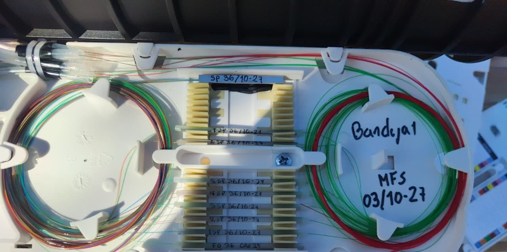
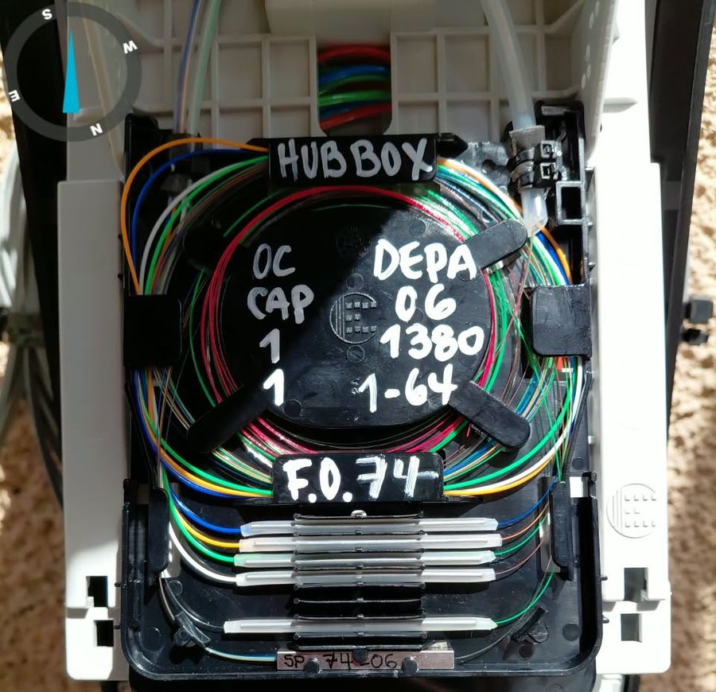
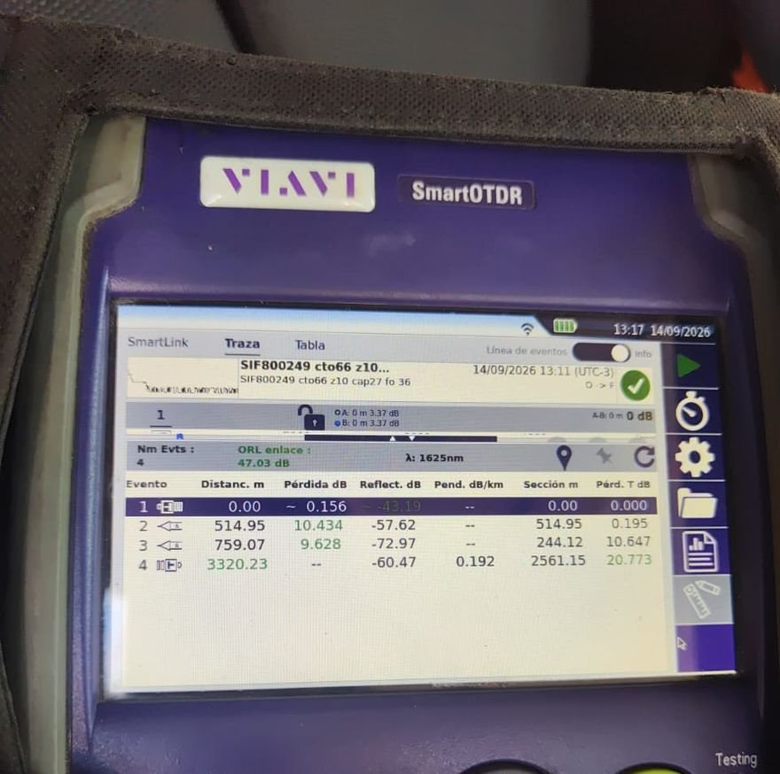
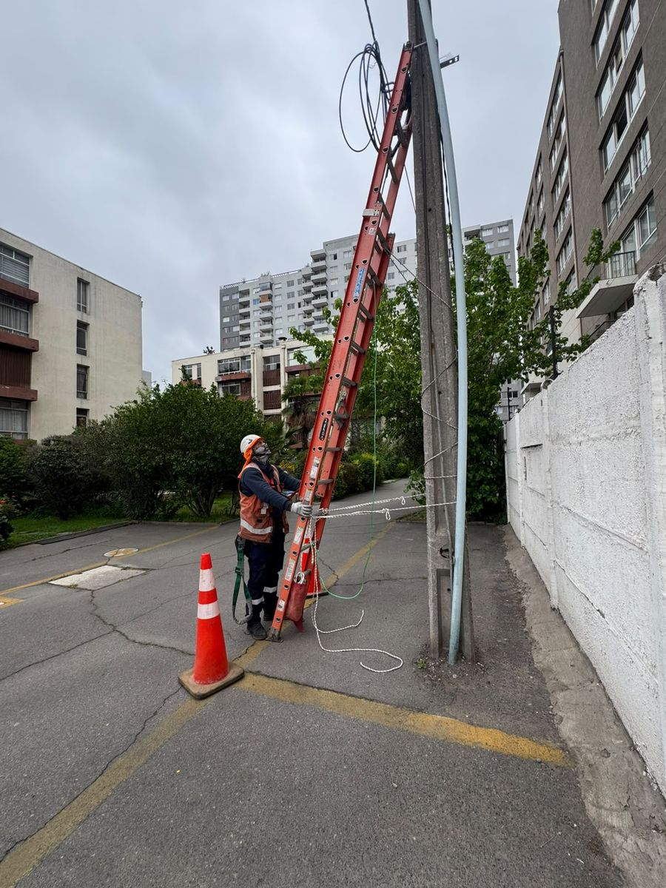
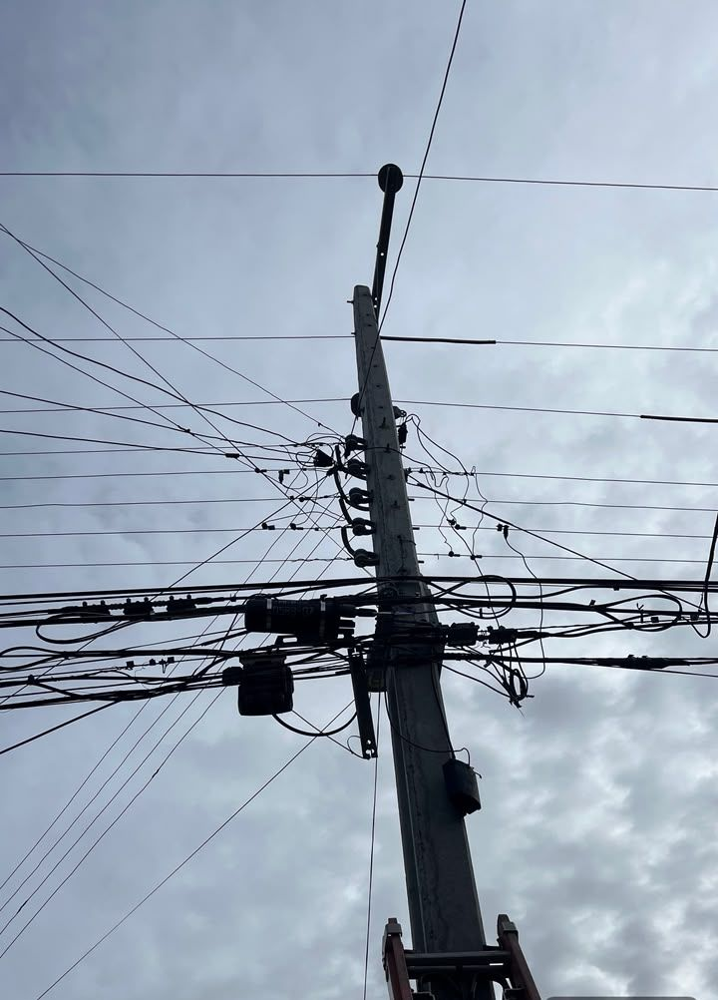
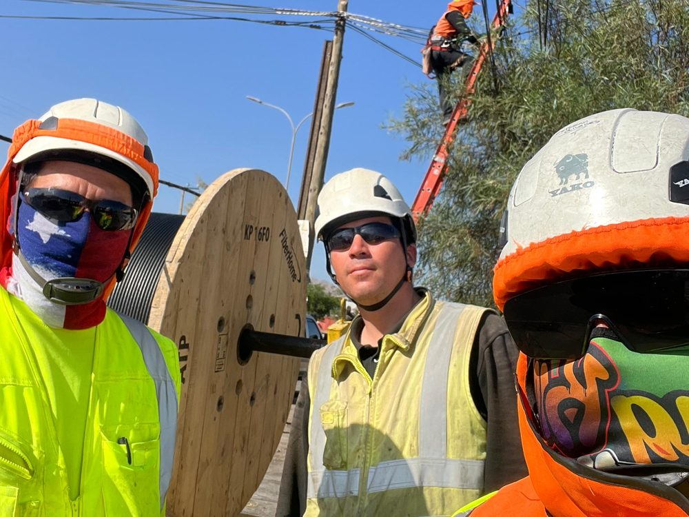
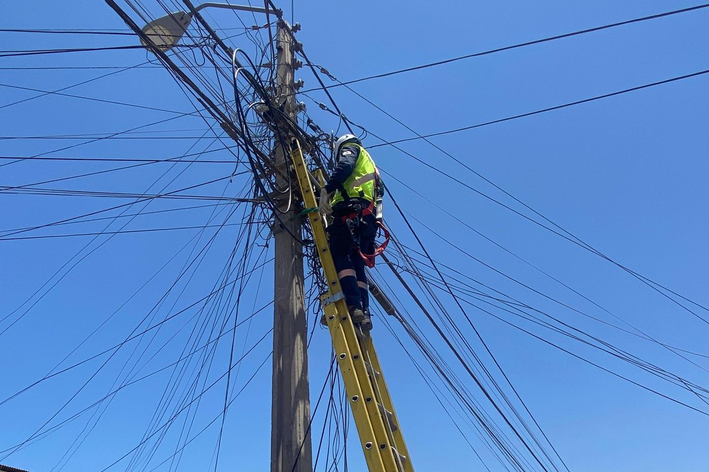
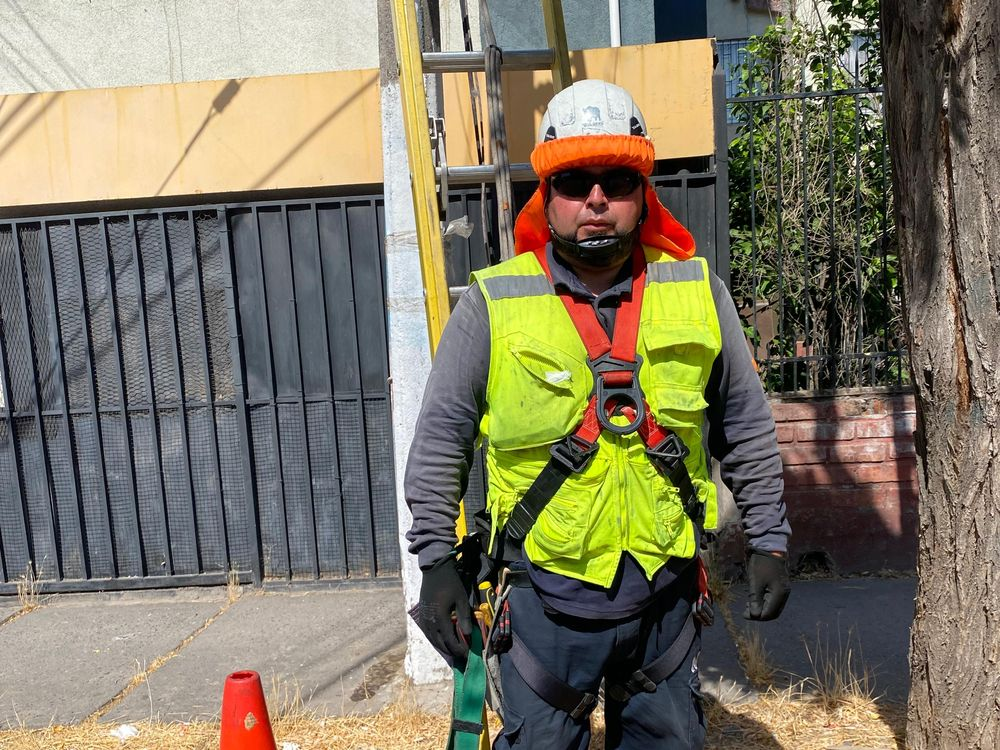
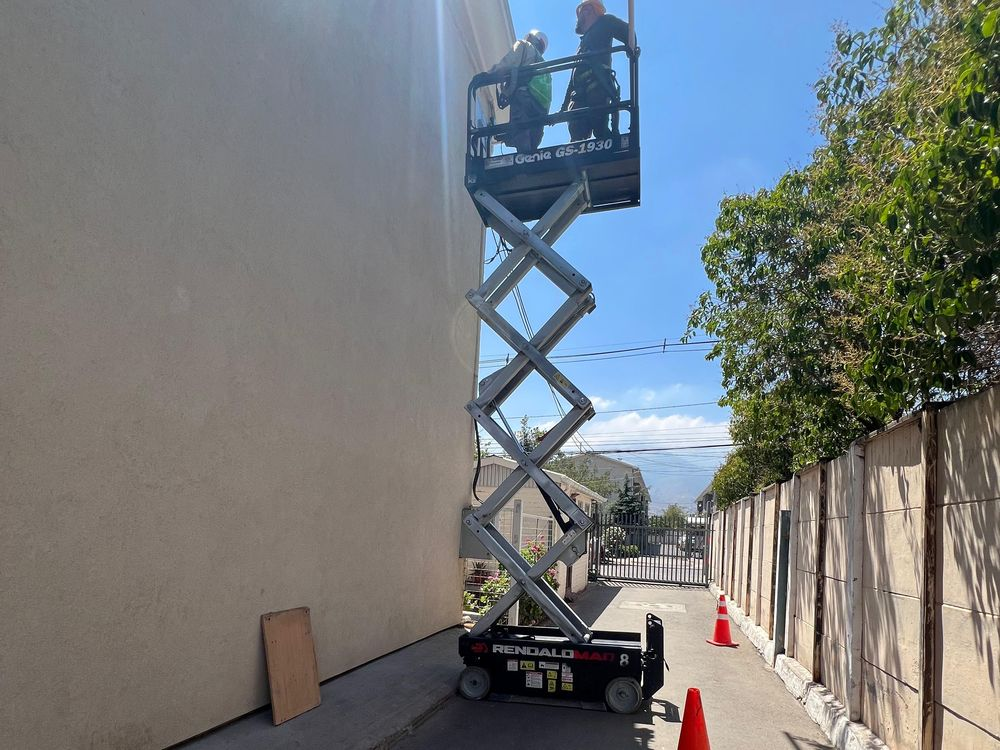
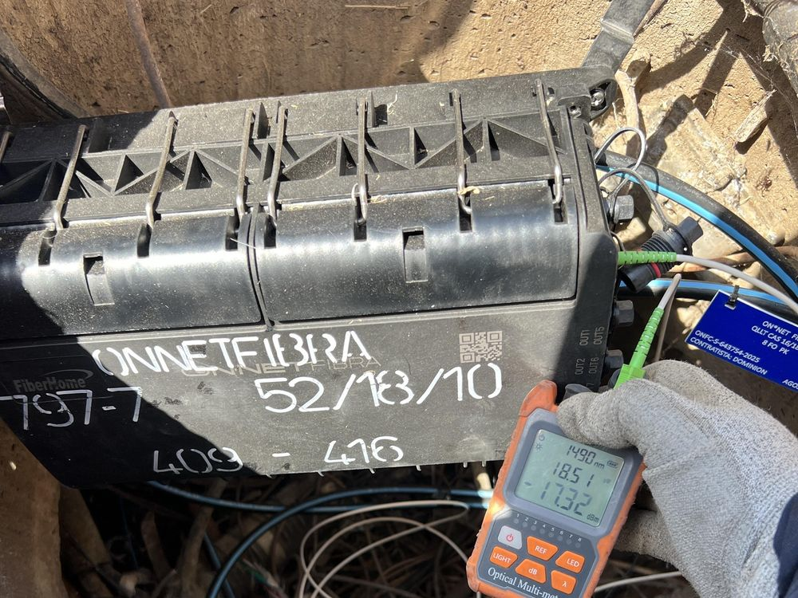
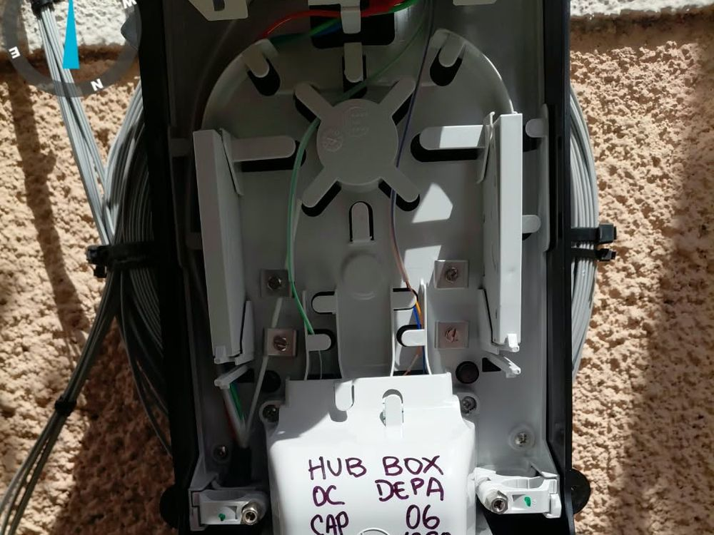
La misma cuadrilla que construye es la que certifica. No mandamos el proyecto a un tercero para medir, ni para dibujar el plano, ni para armar la carpeta. Eso quita las esperas entre etapas y deja una sola persona a la que preguntarle por cada ID.
Reconocimiento de ruta y planos para construir.
2 días los proyectos chicos; 10 a 15 los grandes.
OTDR en terreno, 1 a 3 días, con la misma cuadrilla.
Se levanta durante la obra, no después de terminarla.
Revisión interna dedicada antes de presentar.
Carpeta completa por ID, lista para revisión.
No arrendamos equipos críticos ni dependemos de terceros para medir. Cada cuadrilla sale a terreno autónoma, con su vehículo, sus instrumentos y sus elementos de protección.
Al norte no fuimos de paso. Entre diciembre de 2024 y agosto de 2025 mantuvimos cuadrillas fijas en Arica y Antofagasta para ATP Fiber Chile, con los vuelos, la estadía y los relevos programados por nosotros.
Mover una cuadrilla completa fuera de Santiago ya lo tenemos resuelto: procedimiento hecho y costos medidos.
Tenemos una jefa de calidad dedicada, que no depende de las cuadrillas y cuyo único trabajo es que el proyecto llegue completo y correcto a revisión del mandante.
Cuando aparece una observación de terreno la repara la misma cuadrilla que ejecutó, y el retrabajo lo paga MCF: combustible, peajes y horas incluidos.
Ya pasamos una homologación completa como proveedor: balance, F22 de los últimos tres años, doce F29 pagados, F30-1, certificado de siniestralidad y vigencia de sociedad. La carpeta está armada y la entregamos apenas la pidan.
Documentados por actividad y disponibles en faena.
Protocolo escrito y difundido a todo el personal.
Vigente, con constancia de entrega firmada.
Trabajo en altura, riesgo eléctrico y conducción.
Externo, con visitas a faena y levantamiento de hallazgos.
Cuadrillas contratadas por MCF, con cotizaciones al día.
Lo más lento de cerrar un proyecto es pasar el plano a la planilla de entrega a mano, elemento por elemento. Escribimos un programa que abre el DWG, reconoce mufas, cajas, splitters y cables, y arma la planilla solo.
Corre contra proyectos ya entregados y aprobados, y lo ajustamos cada vez que aparece un caso nuevo.
Relación con mandantes, planificación y control de proyectos.
Terreno, as-built y flota.
Representación y administración societaria.
Checklist, fotografías y certificaciones antes de presentar.
Avance diario, coordinación de cuadrillas y permisos.
Visitas a faena, capacitación y documentación en Certilap.
No ofrecemos capacidad que todavía no tenemos. Abrimos acotado con 2 o 3 cuadrillas híbridas, mostramos el estándar en obra, y escalamos hasta 7 cuadrillas sin pasarle el trabajo a terceros.